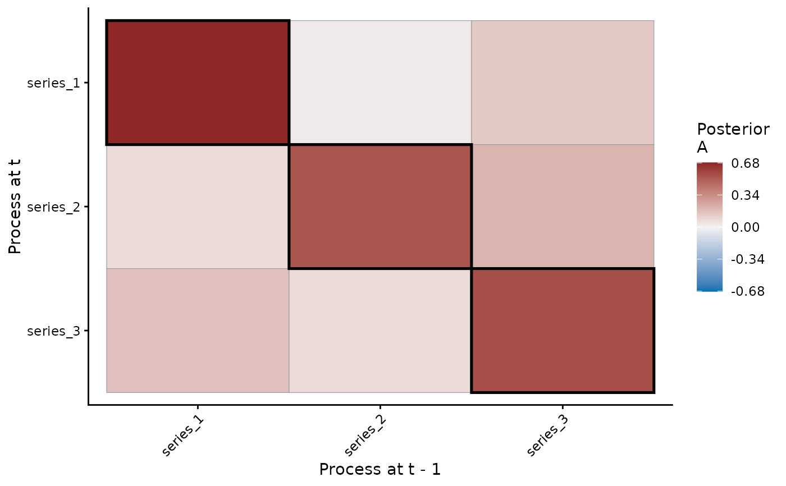

Posterior transition matrix of a VAR trend
Source:R/var_param_extractors.R
posterior_transition_matrix.RdThe coefficient matrix \(A_l\) of lag \(l\) of a VAR() trend.
Row \(i\) holds the effects of the processes at time \(t - l\)
on process \(i\) at time \(t\). The diagonal holds each
process's persistence. The off-diagonal cells hold the effects of
one process on another.
Usage
posterior_transition_matrix(
object,
groups = NULL,
summary = TRUE,
robust = FALSE,
probs = c(0.025, 0.975),
lag = 1L
)Arguments
- object
A fitted
mvgamobject whose trend is a VAR.- groups
The panels of a hierarchical VAR, by level or by index, or
"all".NULLgives the mean of the panels' matrices. A single-panel fit takesNULLalone. One panel returns its matrix. Several, or"all", return a list whoseplot()method isplot.mvgam_var_matrix_list().- summary
Logical.
TRUEreturns the summary of each cell.FALSEreturns the draws as a[ndraws, K, K]array, with the processes naming its second and third dimensions.- robust
Logical. If
FALSE(the default), uses mean and standard deviation for summaries. IfTRUE, uses median and median absolute deviation (MAD).- probs
Numeric vector of probabilities for quantile computation. Default is
c(0.025, 0.975)for 95% credible intervals. Can be a single value or multiple values.- lag
The lag of the matrix, at most the order
pof the fittedVAR(p).
Value
With summary = TRUE, an mvgam_var_matrix: a list of the
matrices A, A_se, A_lower, A_upper, A_ess,
prob_positive, prob_negative and prob_nonzero, with
n_series, series_names, group_label, probs and lag. It
has print() and plot() methods. With summary = FALSE, the
array of draws. Several panels give a list of either.
Details
A hierarchical VAR (VAR(gr = ...)) has one matrix per panel.
groups names a panel to return its matrix. With groups = NULL
the function returns the mean of the panels' matrices, computed in
each draw. The hyperparameters Amu_trend and Aomega_trend pool
unconstrained matrices, which the stationarity map of Heaps (2023)
turns into each panel's matrix. Their mean is no transition matrix.
The mean over panels summarises the pool on the scale of the
matrices.
Each cell is summarised as residual_cor() summarises a
correlation. The estimate is the posterior mean, or the median with
robust = TRUE. The interval takes the quantiles probs. The
effective sample size comes from posterior::ess_basic().
prob_positive, prob_negative and prob_nonzero are the shares of
draws above zero, below zero and away from zero.
References
Savage J (2016). Hierarchical Vector Autoregression. RPubs, 27 November 2016. https://rpubs.com/jimsavage/hierarchical_var
Heaps SE (2023). Enforcing stationarity through the prior in vector autoregressions. Journal of Computational and Graphical Statistics 32(1), 74-83. doi:10.1080/10618600.2022.2079648
See also
VAR(), residual_cor(), irf(), fevd(),
stability(), print.mvgam_var_matrix(),
plot.mvgam_var_matrix().
Other latent dynamics:
active_factors(),
compare_loadings(),
fevd.mvgam(),
irf.mvgam(),
ordinate(),
residual_cor(),
shared_variation(),
stability.mvgam()
Examples
# \dontrun{
set.seed(0)
simdat <- sim_mvgam(family = gaussian(), n_series = 3L,
n_timepoints = 120L, trend_model = VAR(),
prop_trend = 0.95)
var_mod <- mvgam(y ~ 1, trend_formula = ~ VAR(p = 1),
data = simdat$data_train, family = gaussian(),
chains = 2, silent = 2)
#> Warning: 3 of 2000 (0.0%) transitions ended with a divergence.
#> See https://mc-stan.org/misc/warnings for details.
#> Warning: 1 of 2 chains had an E-BFMI less than 0.3.
#> See https://mc-stan.org/misc/warnings for details.
# Each series' persistence and its effects on the others
A <- posterior_transition_matrix(var_mod)
A
#> Lag-1 VAR transition matrix from an mvgam fit
#> Group : single-panel
#> Dimension : 3 x 3
#> Mean |A_ij| (i != j): 0.12
#> Point estimate:
#> series_1 series_2 series_3
#> series_1 0.68 0.03 0.14
#> series_2 0.08 0.53 0.21
#> series_3 0.17 0.08 0.56
#> 95% CI on each cell available in `A_lower` / `A_upper`.
plot(A)

# Next, irf(var_mod) traces how a shock to one series spreads
# }